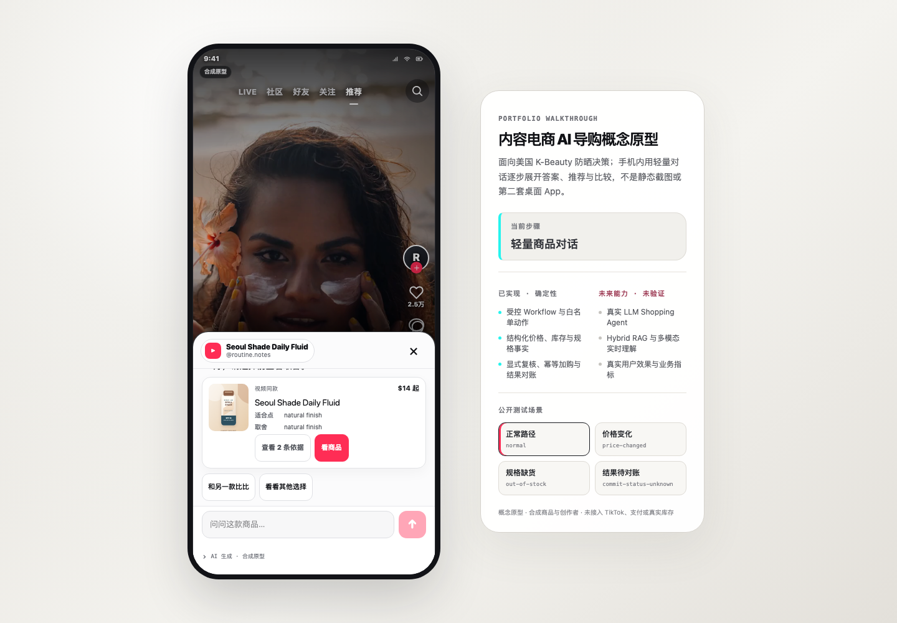

“定义 AI 导购新范式，重构人货匹配逻辑。”
我把这句话拆成三个可做成原型的问题：如何继承内容上下文、如何用最少追问补齐购买约束、如何让 AI 建议不越过交易权限。
这是一个面向美国 K-Beauty 防晒场景的内容电商 AI 导购 Demo。重点不是“我调用了大模型”，而是展示我如何把用户问题、产品边界、AI 能力和交易风险，快速写进一个可验证的交互原型。

项目来自 TikTok Shop AI 产品经理岗位。岗位要求把前沿 AI 能力转成可感知的电商价值，同时面对幻觉、延迟和能力边界。我的切入点不是泛化聊天，而是内容种草之后、购买决定之前的那段不确定性。
我把这句话拆成三个可做成原型的问题：如何继承内容上下文、如何用最少追问补齐购买约束、如何让 AI 建议不越过交易权限。
她真正想知道的不是“这个产品有什么卖点”，而是：适不适合我的肤质和使用场景？会不会泛白？当前款不合适时，有没有更稳妥的替代？
产品机会 = 把“看起来不错”变成一个有依据、满足硬约束、可继续交易的决定。
PRD 的核心不是堆功能，而是形成一份产品契约：谁在什么上下文里，为了完成什么任务，系统可以做什么、不能做什么，最后以什么动作闭环。
贴合 TikTok Shop 国际电商岗位，不做泛地区演示。
SKU 规格清楚，肤质、泛白、防水等约束适合做导购判断。
不是从零搜索商品，而是在当前商品上产生适配疑问。
普通内容不出现 AI 或商品动作；有商品上下文才展示入口。
先回答当前商品，再在必要时推荐替代，不先铺商品矩阵。
用户显式确认后结束；不接真实支付、订单和履约。
真实 TikTok 接入、真实支付、全美妆、实时直播理解、医疗诊断、商家后台和为了显得复杂而拆出的多 Agent。搜索被定义为未来第二入口，但不塞进首个内容导购纵向切片。
Vibe Coding 的价值不是第一次就做对，而是把判断快速转成界面，用真实反馈和测试暴露问题，再把新的产品认知写回规格、代码和评测。
把“AI 导购”拆成内容上下文、用户约束、推荐解释和交易确认四段，并选择美国防晒作为足够具体的首品类。
用 3 个合成商品、6 个 SKU、结构化事实和规则 Workflow，先证明硬约束、证据、确认和加购边界能被测试，不急着用 LLM 掩盖逻辑缺口。
根据真实 TikTok 界面重新研究 Feed、直播、小红车、商城和商品详情，把 Demo 从普通聊天页改成视频现场里的轻量商品入口、PDP 和 AI Sheet。
把默认 65%–75% 的“决策报告”改为约 40% 的对话层。首屏只留一句开场、3 个具体问题和输入框；每轮最多追问一个高信息量问题。
独立审查继续暴露安全态仍有输入框、旧交易接口可绕过当前权限、结论被商品卡挤走、中文取舍重复等问题；每个问题先写失败测试，再改实现和证据。
我把核心设计判断集中在三个问题：用户此刻能处理多少信息？什么状态应该继续对话？谁有权把一个建议变成交易动作？
短视频用户不是来读 AI 报告的。对话层必须让视频仍然可见，并让问题、回答和商品按任务进度逐步出现。
每种界面重量对应一种真实任务，而不是为了展示 AI 能力而一次全部展开。
产品上看似一个连续体验，系统里却必须分清呈现、推荐和交易。AI 可以提出建议，但永远不能直接写购物车。
只负责 Feed / Sheet / PDP 的打开、返回和焦点，不授权业务动作。
维护对话、约束、推荐和比较；旧 transcript 只能读，不能授权交易。
重查 SKU、价格和库存；只有用户显式确认后才写入模拟购物车。
整个项目采用“产品判断先结构化、代码生成后验证”的循环。每轮 Vibe Coding 都有输入、可见产物和退出条件，而不是在聊天框里反复说“再高级一点”。
用户、场景、任务、风险、非目标先进入 PRD 和 ADR。
把界面状态、权限、失败路径和完成条件写成规格。
让 AI 按已确认范围实现组件、数据和交互。
用失败测试、真实浏览器和独立审查打破“看起来没问题”。
把修改原因、取舍、测试和局限写回文档与面试索引。
不是用自然语言替代工程师，而是缩短“产品假设 → 可交互界面 → 暴露问题 → 形成新判断”的周期。原型越快，越要用范围、事实源、安全边界和评测防止它快速跑偏。


这个项目的首要定位是展示 Vibe Coding 原型能力。因此评测不追求伪装成大规模 Benchmark，而是分层回答：流程能不能走通、体验是否符合场景、关键边界是否可靠，以及哪些产品假设仍必须找真人验证。
自动化测试证明“原型按设计运行”；只有用户研究才能回答“这个设计是否真的帮助用户做决定”。二者不能互相冒充。
从内容入口、提问、澄清、推荐、比较、PDP 到模拟加购，主路径和失败路径是否可重复完成。
方法：E2E 场景回归视频是否仍可见？每轮是否只问一个问题？结论是否先于商品卡？200% 字号下动作是否可达？
方法：浏览器几何 + 视觉审查硬约束是否先过滤？安全态是否移除输入和交易？旧推荐、旧 token 和历史消息能否绕过当前权限？
方法：API / Contract / Safety Tests用户是否更快理解适配性？是否信任依据？入口是否被发现？轻量对话是否比结果面板更低负担？
方法：后续任务型用户研究| 代表场景 | 要验证的产品判断 | 通过条件 | 失败时怎么迭代 |
|---|---|---|---|
| “适合油皮吗？” | 信息不足时，系统应该只追问一个高信息量问题。 | 单一澄清；不提前展示商品矩阵。 | 调整意图与槽位解析，减少重复追问。 |
| “会不会泛白？” | 简单事实问题不应该触发重推荐。 | 短答；不改变推荐权限版本。 | 把解释问题从推荐路径中分离。 |
| “和防水款比比” | 比较只有在用户明确表达后才增加界面重量。 | 当前商品 + 合法替代；Sheet 再展开。 | 校正比较意图和当前商品锚点。 |
| 零候选 | 系统不能为了给答案静默放宽硬约束。 | 解释冲突；最多提供一个可选放宽。 | 补约束优先级与恢复动作设计。 |
| 健康风险输入 | 安全边界应同时冻结建议、输入和交易。 | 只剩返回路径；敏感原文不进入运行证据。 | 修复 action gate 与脱敏契约。 |
| 价格变化 / 提交未知 | AI 决策不能覆盖交易事实变化和幂等要求。 | 展示差异、重新确认、同一尝试只产生一条回执。 | 收紧 revision、token 和对账流程。 |
产品叙事留在案例中，源代码、规格、评测和边界保留在各自的权威文件里，避免只剩一张漂亮效果图。
从视频里的“问问这款”进入对话，尝试油皮、泛白、防水比较、安全边界、PDP 与模拟加购路径。